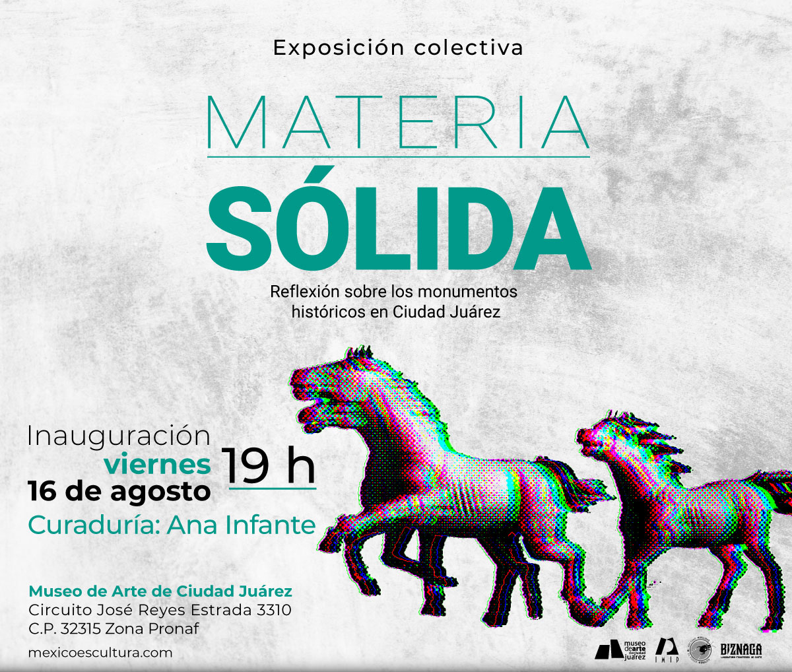

Materia Sólida. Reflexión sobre los monumentos históricos en Ciudad Juárez es una exposición colectiva que reúne a 20 artistas locales con el propósito de ofrecer un ejercicio de reflexión sobre los monumentos más emblemáticos de Ciudad Juárez. Estos monumentos han simbolizado aspectos fundamentales de nuestra identidad histórica y cultural.
De acuerdo con el Instituto Municipal de Investigación y Planeación, Ciudad Juárez cuenta con un patrimonio de valor histórico, artístico y arquitectónico de más de 180 elementos. Este patrimonio representa sucesos socioculturales diversos como: la fundación, la migración, la industria maquiladora, los movimientos armados y homenaje a personajes que han dejado una huella significativa en la historia regional, nacional e internacional.
La importancia de esta exposición radica en su capacidad para generar un diálogo crítico sobre la representación simbólica en nuestra ciudad. A través del arte, Materia Sólida invita a cuestionar cómo estos monumentos han influido en la construcción de nuestra identidad colectiva. Nos enfrenta a preguntas fundamentales: ¿Por qué existe un monumento al expresidente estadounidense Abraham Lincoln en nuestra ciudad? ¿Por qué las figuras históricas femeninas están subrepresentadas en comparación con sus homólogos masculinos? ¿Qué monumentos reflejan la realidad y las preocupaciones actuales de Ciudad Juárez? ¿De qué manera podemos reinterpretar el concepto de monumento para que responda a una representación más inclusiva y relevante, que contemple tanto las necesidades contemporáneas como las nuevas narrativas y significados emergentes en nuestra sociedad?
Al abordar estas cuestiones, la exposición no sólo pone en revisión las representaciones históricas y sus significados, sino que también promueve una reflexión sobre el papel del arte en el espacio público. Materia Sólida busca ofrecer una nueva perspectiva sobre cómo los monumentos sobreviven en la memoria histórica y en el imaginario colectivo, y cómo pueden contribuir a una comprensión más inclusiva y dinámica de nuestra identidad cultural.
Ana Infante y Pamela Figueroa Neri |
Planifica tu visita. A continuación encontrarás nuestros horarios generales y la agenda detallada de nuestras exposiciones temporales y permanentes.
Martes a Domingo: 10:00 h – 18:00 h
Jueves de Museo Nocturno: 10:00 h – 21:00 h
Lunes: Cerrado por mantenimiento de obras.
Nota: La taquilla y el acceso a las salas cierran 30 minutos antes del cierre del museo.
| HORA | ACTIVIDAD / ESPOSICION | UBICACION | TIPO DE ACCESO | ||||
| 10:30 h | Apertura de exposición: "Ecos del Cubismo" | Sala Principal 1 |
|
||||
| 11:00 h |
|
Punto de encuentro: Vestíbulo | Libre con entrada general | ||||
| 12:30 h |
|
Pabellón Tecnológico |
|
||||
| 14:00 h |
|
Terraza Sur |
|
||||
| 16:30 h |
|
Auditorio B | Requiere reserva previa |
REGISTRATE PARA COMPRAR LOS BOLETOS EN LINEA.